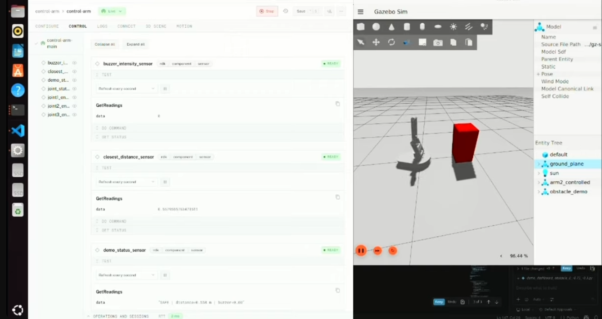

Sudo Arms
Built at StarkHacks, one of the largest hardware hackathons — a low-cost leader-follower teleoperation system for medium-distance work with real-time haptic feedback that flags likely collisions before the far-side arm makes contact with the latency it's operating under. Handled preliminary CAD and hardware integration across the team's ROS 2 Jazzy, SLAM, Gazebo, Viam, and Docker-based stack.
1st PlaceSpace Exploration Track
Leader / FollowerArm Architecture
CAD + IntegrationMy Role